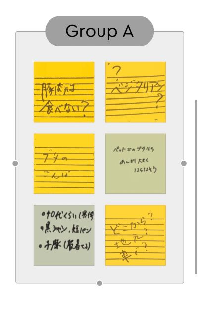
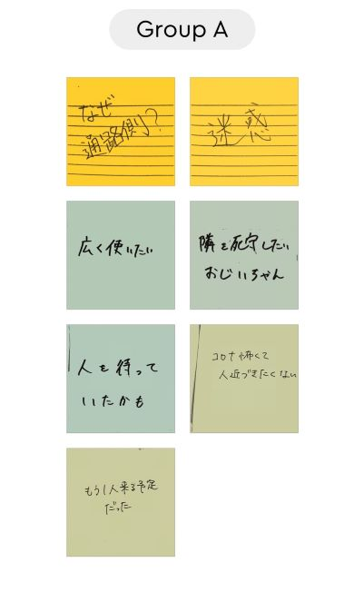
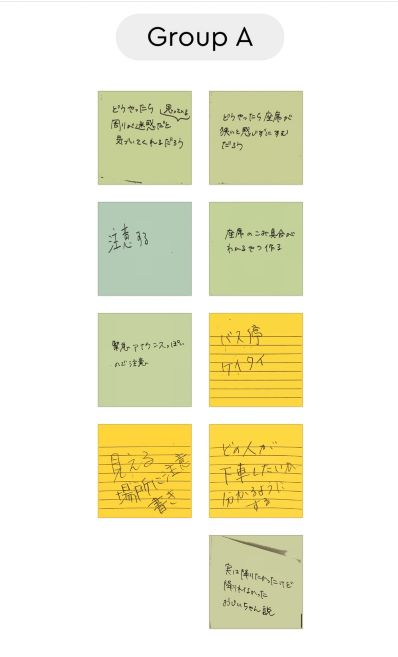

groupwork
課題の通学中、電車に乗っている際など人々を観察して、気になった人を記憶しスケッチをしたものをもとにグループワーク
視覚化から客観視、分析、共感、推測へ
山下公園で豚の散歩をする人へ客観視、分析、共感、推測
状況
男性
半袖、半ズボン
豚の散歩
ここから

満員バスの中座席を詰めずに二人席の通路側に座り窓側の座席を空席にする人へ客観視、分析、共感、推測
状況
男性
満員バスの中座席を詰めずに二人席の通路側に座り窓側の座席を空席にする
長時間乗車
ここから

そして、問題発見・問題解決へ
